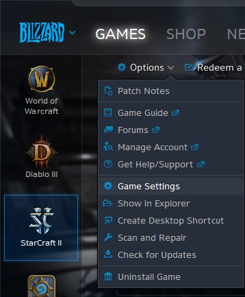
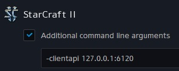
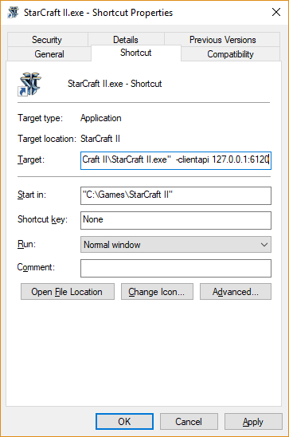
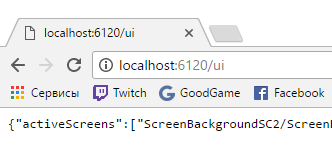

If you are using battle.net client, open it, go to Starcraft 2 settings

Scroll down to Starcraft 2 command line options, and add the following line
-clientapi 127.0.0.1:6120
If you already have other command options in the textbox, insert the line above in the front and put a space after it
Make sure "Additional command line arguments" is checked
If you are using desktop shortcut insead of battle.net client, go to shortcut options and add the same line to the shortcut's target
Run Starcraft 2, and while Starcraft is running, open the following link in your web-browser
http://localhost:6120/uiIf everything is all right, you should see web-page with some brackets, and possibly some words between them
In this case, you should see "Connected" status in the application window. Just make sure that the number in "Starcraft 2 client port" field matches the number we used above (i.e. 6120)
If you see brackets in web-browser but the application cannot connect to Starcraft 2 client, please check your firewall settings
If you see "Page not found" in your web-browser, it could be because some other application already uses the port 6120. Just pick another port number in range from 5000 to 65000 and redo all the steps